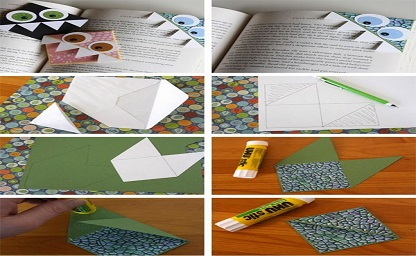

Paper Dahlia Wreath
To start with choose the colors for the flower. Now cut out squares and rectangles from these colorful sheets. You can go with color combinations while choosing colors for the flower. Now fold the squares and rectangles into cones of different sizes. The size of the cone will depend on the dimensions of the square or rectangle used to make it. Staple the cones to secure them in place. Now take a circular cardboard piece and start pasting these cones one by one starting from the outer edges and moving inwards. You can make colored layers by starting with one colored cones and moving onto the the next color once they are all used up. Start with the largest cones first. This will give you tiers of colorful cones which look like petals of the flower. Make sure the shape always remains a circle and does not get oblongated in any round of cones. This is an easy and very beautiful way of making a beautiful flower design.
Wall Decoration with Paper Craft
For the heart crafts on the walls of your room, start by drawing a heart shape on a red colored sheet. Now cut these red colored hearts out. Once you have cut out these hearts, pinch them at the apex to cup the two heart bulbs. This gives a 3D effect to the heart shape. Now secure the heart this way. Now stick all the 3D hearts on the wall. This gives you a beautiful heart craft on the wall of your room. You can even make some rain crafts or hot air balloons for the walls of your room. You can make 3D hot air balloons by cutting out four hot air balloon shapes and sticking them side to side. Now stick them on the wall. Similarly you can make 3D clouds and also 3D umbrellas. All of these 3D crafts look pretty and atrractive. You can try them all or one of these to beautify the walls of your room.
Make Paper Butterflies at Home
These origami craft butterflies will surely take your room decor to another level. You can easily make these beautiful crafty butterflies in bright colored sheets of paper. The steps to make these beautiful butterlies are few and can be easily understood. Start with a square sheet of colored paper. Fold in both the diagonal directions. Now pinch the corners inwards to get two inside folds with a triangle on the top. Fold the two side upwards upwards and turn the sheet over. Make sure you do not pull too hard. You need to pull enough to fold a little triangle over. This keeps the flap in check and makes sure it foes not go down the back of the butterfly. Now pull the lower triangle to the top. Turn it over again and fold the sheet along the mid rib of the folds. Staple the upper triangular flap carefully in place. Your butterfly is ready fly with its colorful wings. You can make these butterflies in different colors and different sizes.

Monster Shaped Bookmarks
These are really easy to make fun bookmarks. These monster bookmarks will surely increase the interest of the reader. So let us make these pretty little monster bookmarks. To start making this monster bookmark, start with a rogh template of the monster bookmark. Make three squares side by side in an L shape. Now make diagonals on the side squares. Shade the outer triangles as we will not be using them. Cut along these diagonals and the middle square. Now your template is ready. Trace this template on a colorfully patterned sheet. You can even trace it and cut it on a plain colored sheet and stick a patterned square piece in place of the square shape on the edge. Now fold the top triangular pieces inwards. To form a closed lap. Use a glue stick to seal all the edges. This will form a pocket for the page of the book. Now you can either add a small ribbon on the top corner or add some features to the closed pocket. You can even make a monster on the vlosed pocket by using googly eyes, sharp teeth cut out from a white sheet of paper. You can also add trim along the edges of the monster bookmark or even a small piece of ribbon will add beauty to it. These monster bookmarks surely look cute.
Glowing Paper Planet
This glowing paper planet craft is really easy to make. This is a perfect room decoration for an aspiring astronaut. You can even make these crafty planets for school science projects or to teach the students about the different planets and our solar system. First of all cut out circle from a bright colored sheet. Fold these circles in half. So that you get a semi-circle. Now make a slit in the middle of this semi-circle. This will become the slit to fit in the base of the spherical planet. Once you have made the slits in all the circles, fit them all in a white hard stock sheet circular base. Once all the slit circles have been fit in, you get the basic frame work of the planet. Now cut a larger light colored ring to adorn the planet framework. Stick it all around the planet framework. Tie a thread on the ring of the planet. This will help you hang the planet craft. You can use different colored sheets and other decorative material to differentiate between different planets of the solar system.